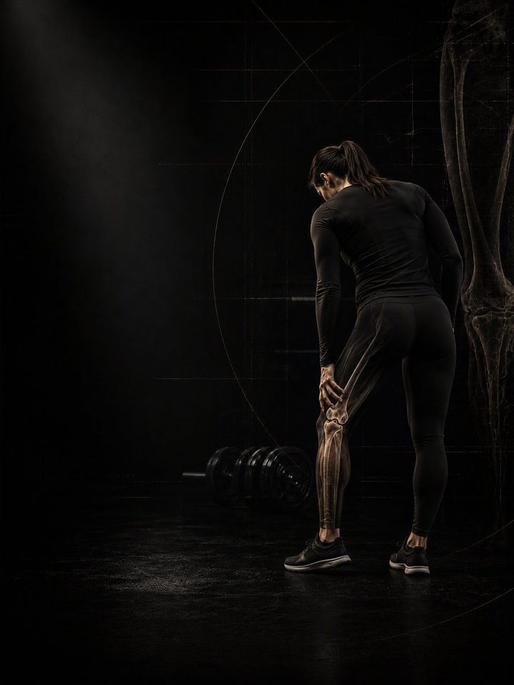

آلام الركبة
أعِد بناء قدرة الركبة على تحمّل الحمل، وعالج الورك والكاحل اللذين يستمران في تحميلها فوق طاقتها.
- مناسب لـكل من لديه ألم متكرر في الركبة ويريد الاستمرار في التمرين
- الجدولروتين يومي مدته 10–15 دقيقة، و3 أيام قوة في الأسبوع
- المعداتالروتين اليومي يحتاج إلى سجادة وشريط مطاطي. أيام القوة تحتاج إلى نادٍ متكامل.
- الصيغةملف PDF للهاتف، وكل تمرين مرتبط بفيديو توضيحي
لماذا يعود ألم الركبة مرة بعد مرة
معظم آلام الركبة لدى النشيطين ليست تلفًا، بل مشكلة في القدرة. فالأنسجة المحيطة بالرضفة والوتر يُطلب منها أكثر مما تدرّبت على تحمّله، وغالبًا لأن الورك في الأعلى والكاحل في الأسفل لا يؤدّيان نصيبهما.
الراحة تهدّئ الألم أسبوعًا، ثم يعود لحظة استئناف التمرين، لأن الراحة لم ترفع القدرة قط. هذا البرنامج يفعل العكس: يحمّل الركبة عن قصد وبالتدريج، ويستعيد في الوقت نفسه قوة الورك ومدى حركة الكاحل، وهما ما يحدّد أصلًا مقدار القوة التي تصل إلى المفصل.
أسبوعك
روتين يومي قصير، وثلاثة أيام قوة في النادي. أي ثلاثة أيام تصلح، ما دامت غير متتالية. هذا مثال واحد:
| الأحد | الاثنين | الثلاثاء | الأربعاء | الخميس | الجمعة | السبت |
|---|---|---|---|---|---|---|
| اليوم 1 + الروتين اليومي | الروتين اليومي | اليوم 2 + الروتين اليومي | الروتين اليومي | اليوم 3 + الروتين اليومي | الروتين اليومي | الروتين اليومي |
كيف يسير البرنامج:
- الاختبار أولًا. أربعة اختبارات قبل الأسبوع 1، تُعاد بعد الأسبوعين 3 و6.
- الروتين اليومي، 10–15 دقيقة. سبع حركات، كل يوم. وفي أيام القوة يُعدّ هو الإحماء أيضًا.
- أيام القوة. اليوم 1 ثم 2 ثم 3، بالترتيب.
الأنماط الخمسة وراء معظم آلام الركبة
الركبة مفصل مِفصلي بين مفصلين يوجّهانه: الورك والكاحل. ونادرًا ما تفشل وحدها، بل تفشل حين يُطلب منها امتصاص ما كان يجب أن يتحمّله هذان المفصلان، أو حين لم تُبنَ أنسجتها أصلًا لهذه المهمة. معظم الناس يجدون أنفسهم في نمطين أو ثلاثة من هذه الأنماط. يدرّب البرنامج الأنماط الخمسة معًا، فلا تحتاج إلى تشخيص دقيق لتبدأ.
-
ضعف العضلة الرباعية. العضلة الرباعية هي ممتص الصدمات للركبة، ومقدّمة الركبة أول ما يشتكي حين تكون غير مدرّبة بما يكفي. الدرج والمنحدرات والجلوس الطويل هي المحفّزات المعروفة، لأن على العضلة الرباعية في كل منها أن تثبّت الرضفة تحت الحمل. في البرنامج: مدّ الركبة، دفع الساقين، النزول من الدرجة
-
انحراف الركبة للداخل (ضعف التحكّم في الورك). تنهار الركبة للداخل في السكوات والخطوات والهبوط، لأن الأرداف لا تُبقي الفخذ على استقامته. الركبة هنا ليست المشكلة، بل هي ببساطة المكان الذي تقع عليه القوة سيئة التوجيه. في البرنامج: تمرين المحارة، المشي الجانبي بالشريط المطاطي، النزول من الدرجة
-
كاحل متيبّس (محدودية ثني الكاحل للأعلى). إذا لم تستطع الساق التقدّم للأمام فوق القدم، فعلى الركبة والورك تعويض الفرق في كل سكوات وكل درجة. واستعادة ولو سنتيمترين من مدى حركة الكاحل كثيرًا ما تخفّف عن الركبة أكثر مما يفعله أي تمرين للركبة. في البرنامج: تحريك الكاحل، ثبات السكوات العميق، إطالة السمانة بوزن
-
غياب مفصلة الورك (حركة تهيمن عليها العضلة الرباعية). حين لا ينثني الوركان، تتحوّل كل حركة إلى حركة ركبة. فالجلوس والتقاط الأشياء والتباطؤ كلها تُقاد من الركبة بدلًا من أن تتقاسمها مع الورك والعضلات الخلفية للفخذ. في البرنامج: الرفعة الرومانية، دفع الورك، انزلاق العضلات الخلفية للفخذ
-
ضعف السمانة والوتر. تمتص السمانة الجزء الأول من كل هبوط. وحين تتعب مبكرًا ينتقل الحمل مباشرة إلى الأعلى نحو الوتر الرضفي، ولهذا يترافق ضعف السمانة مع ركبة القافز في الغالب. في البرنامج: رفع السمانة، القفز، الوثب الجانبي. التمرين الإضافي لهذا النمط هو النزول الجانبي من الدرجة في المرحلتين 1–2، ويبدأ القفز والوثب الجانبي في المرحلة 3.
تمارين نمطك الإضافية. يذكر ملف PDF تمارين إضافية لكل نمط. اختر نمطين على الأكثر من الأنماط الأقرب إليك، وأضف تمارينهما في نهاية كل يوم قوة، 3 مجموعات لكل تمرين.
كيف تتقدّم الأسابيع الـ6
الروتين اليومي يبقى كما هو طوال الأسابيع الستة. وأيام القوة تنتقل مستوى أعلى كل أسبوعين.
| الأسبوعان 1–2 | الأسبوعان 3–4 | الأسبوعان 5–6 | |
|---|---|---|---|
| المرحلة | التحكّم | البناء | الدمج |
| التركيز | العزل والتحكّم | تحميل الأنماط الكبيرة | تمارين الساق الواحدة والهبوط |
| المجموعات الفعلية أسبوعيًا | 54 | 54 | 54 |
متوسط الجهد نحو 6/10 في الأسابيع 1–4، و6.3/10 في الأسبوعين 5–6. هذا المقياس هو الجهد (RPE)، أي تقييم من 1 إلى 10 لمدى صعوبة المجموعة: «جهد 6/10» يعني أنه يتبقى في الخزان نحو 4 تكرارات.
القواعد التي تجعله ينجح
- يزداد العمل كلما استحقّت الركبة ذلك. العزل والتحكّم أولًا، ثم تحميل الأنماط الكبيرة، ثم الهبوط وتغيير الاتجاه. كل مرحلة مدتها أسبوعان.
- الروتين اليومي هو العلاج، وأيام القوة هي التمرين. الروتين لا يتغيّر، حتى يؤدّي دوره كل يوم.
- القرارات تتبع الأرقام. تعيد الاختبار بعد الأسبوعين 3 و6.
لماذا تستمر في التمرين
الركبة تحتاج إلى الحمل لا إلى الراحة. في ملف PDF بدائل للرفعات التي ترفع الحمل على الركبة قبل أن تكون مستعدًا، فتستطيع الاستمرار في التمرين بينما يُعاد بناء الركبة.
كيف تقيس تقدّمك
أربعة اختبارات: النزول من الدرجة، والركبة إلى الحائط، والجلوس والوقوف، ورفع السمانة على ساق واحدة. تجريها قبل الأسبوع 1، ثم بعد الأسبوعين 3 و6، وتسجّلها في جدول النتائج في ملف PDF.
شكل التقدّم الجيد
- الأسبوعان 1–2: يخفّ ألم الدرج وتيبّس الصباح أولًا.
- الأسبوعان 3–4: يزداد رقم الركبة إلى الحائط، وتتوقّف الركبة عن الانهيار للداخل في النزول من الدرجة.
- الأسبوعان 5–6: ترتفع أعداد الجلوس والوقوف ورفع السمانة، ويتوقّف التمرين عن التسبّب في ألم عضلي في اليوم التالي.
إذا لم يتغيّر شيء عند إعادة الاختبار في الأسبوع 3، فاحصل على تقييم من مختص بدلًا من الضغط أكثر.
معيار الإنهاء في الأسبوع 6: الدرج والجلوس والوقوف بألم 2/10 أو أقل لمدة أسبوعين متتاليين، و20 تكرارًا من رفع السمانة على ساق واحدة لكل جهة، وفرق أقل من 25% بين الجهتين في الجلوس والوقوف، ونزول من الدرجة مصوَّر والركبة تسير فوق القدم في التكرارات العشرة كلها.
استمر في المشي
امشِ 20–30 دقيقة بوتيرة خفيفة على أرض مستوية، في معظم الأيام. الركبة تتغذّى بالحركة: فالغضروف لا يصله دم، ويعتمد على التحميل وإزالة التحميل ليبقى سليمًا. إذا آلمك المشي، فقصّر مدته وقسّمه بدلًا من التوقّف عنه. وحافظ أيضًا على مسكّنَين مجانيين: 7–9 ساعات من النوم، والتحكّم في التوتر.
الأدلة العلمية
كل برنامج في المكتبة مبني على أبحاث منشورة، وقوة تلك الأبحاث مذكورة صراحةً لا ضمنًا. وحيث تكون الأدلة محدودة، تقول الصفحة ذلك.
| النتيجة | المصدر | ما لا تُظهره |
|---|---|---|
| تدريب القوة يخفض الإصابات الرياضية إلى أقل من ثلث معدلها في المجموعة الضابطة. أما الإطالة فلا تخفضها. | Lauersen, Bertelsen & Andersen, British Journal of Sports Medicine 2014. Meta-analysis of 25 randomised trials, 26,610 participants. PMID 24100287 | نسبة الخطر 0.32 لتدريب القوة و0.96 للإطالة. تفاوتت التجارب كثيرًا، ولم تكن الجرعة موحّدة. |
| أي وصفة تدريب معقولة أفضل من عدم التدريب. الأحمال الأثقل تحتل المرتبة الأعلى للقوة. | Currier, McLeod, Banfield et al., British Journal of Sports Medicine 2023. Network meta-analysis, 178 strength and 119 hypertrophy studies. PMID 37414459 | كانت الفروق بين الوصفات صغيرة، وكلها نجحت. |
ماذا بعد
بعد 6 أسابيع:
- ابنِ القوة والعضلات: القوة الأساسية
- تدرّب كرياضي: التطوير الرياضي
- منطقة أخرى تحتاج إلى عمل: السلسلة التصحيحية
قبل الشراء: احصل على موافقة طبية أولًا إذا
- كان لديك ألم في الصدر، أو ضيق تنفس غير معتاد، أو خفقان، أو دوخة أثناء المجهود.
- كان لديك ضغط دم مرتفع غير منضبط، أو مرض قلبي معروف، أو خضعت لعملية جراحية مؤخرًا.
- كنتِ حاملًا أو بعد الولادة بفترة قصيرة. احصلي على موافقة وبرنامج مخصص أولًا.
- بدأ الألم بإصابة محددة (صوت فرقعة، أو انهيار المفصل، أو تورم خلال ساعات)، أو لديك تنميل أو ضعف أو حرارة أو ألم يوقظك ليلًا.
هذا البرنامج إرشاد عام للياقة البدنية، ولا يغني عن التقييم الطبي.